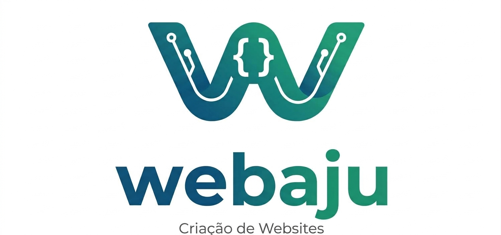

Site em construção
Estamos preparando algo novo para você. Enquanto isso, se precisar de um site para o seu negócio, é só chamar.
Chamar no WhatsApp
Estamos preparando algo novo para você. Enquanto isso, se precisar de um site para o seu negócio, é só chamar.
Chamar no WhatsApp